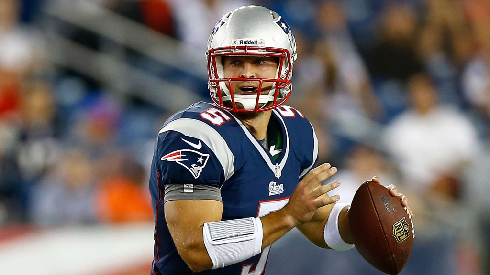

New England Patriots
The New England Patriots signed Tebow on June 10, 2013. He signed a two-year contract with no guaranteed money, although it did have playing time-based incentives in 2014. The move reunited him with Josh McDaniels, who was the head coach of the Denver Broncos during Tebow's rookie season. Tebow played in New England's first two preseason games against the Eagles and the Buccaneers, but only completed five passes in both games, was sacked several times and intercepted once, intensifying criticism of his football acumen. He went 6-for-11 for 91 yards, throwing a pair of touchdown passes and one interception, and gained 30 yards on six carries against the New York Giants, but he also was sacked four times. He threw a total of two touchdown passes and two interceptions in the preseason and had a passer rating of 47.2 and completed 36.7% of his passes. He was released from the Patriots on August 31, 2013. After being cut, Tebow publicly thanked the Patriots organization for the opportunity and stated: "I will remain in relentless pursuit of continuing my lifelong dream of being an NFL quarterback." Though he began his broadcasting career in December 2013 on the SEC Network, Tebow continued to seek opportunities to resume his career as an NFL quarterback.